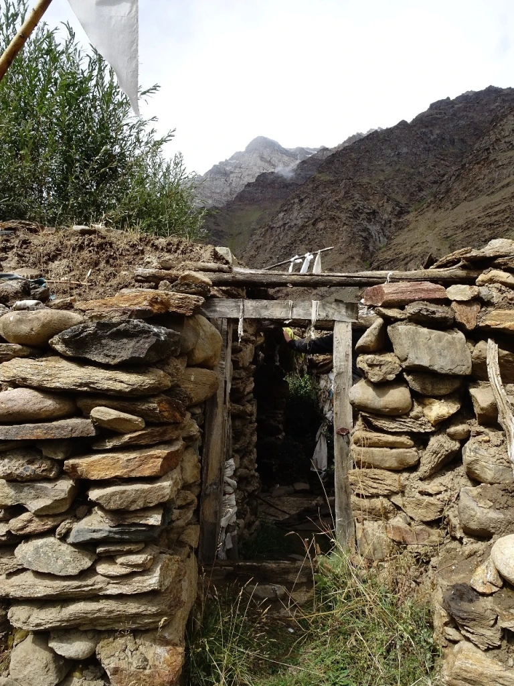

Vernacular architecture is a source of history, a standing archive of how people lived in the past. The connection one feels to an old house is inexplicable and enigmatic. Traditional architecture plays an essential role in connecting a person to their heritage and culture. However, apathy towards our history and historical legacies have made these buildings more vulnerable to ruination. Whenever I see vernacular architecture, whether it be a traditional house or even a public space, I get a sense of belongingness that makes me feel connected to the structure. I imagine the ways of living from the past, the lifestyle of people, their culture. That is the beauty of space I believe, it has the power to take you back into the past, to enable travel time.
Head Of Academics at Naropa Fellowship, Anuja Dasgupta, once said to me that spaces are built to make us feel in a particular way. She gave examples of places of worship and 'The Memorial to the Murdered Jews of Europe' also known as 'the Holocaust Memorial'. Designed by architect Peter Eisenmen and engineer Buro Happold the building was created in the form of a maze, as a labyrinth is a symbol for entrapment and confusion. Similarly, traditional houses and old architecture has their own stories of creation. These were the homes and buildings that were safe havens for our ancestors that built them, stone by stone, plank by plank and as a result, they are linked to our past and they need to be preserved.
I have been in love with so many of these buildings since my childhood and watching them being rebuilt and recast into a completely modern form, with no touch of culture makes me sad. The before and after picture of an old shrine in the Panikhar region of Kargil shows the unthoughtful adaptations of modern architecture in Ladakh. Constructive discussions, proper planning and designing could have restored this architecture or constructed it while keeping our history intact. I grew up going to this old shrine and seeing its re-construction was indeed a heart-breaking experience for me. The sense of belongingness I felt to the space was missing.
The importance of vernacular architecture needs to be understood by each individual. The race to modernisation is destroying the past in many ways. The generation that is destroying the architecture for the sake of development is keeping no thread attached to the past. Even if absolute preservation is not possible, spaces can be rebuilt in a traditional, contextual way that is sensitive to the culture of the region.
While on a trip to my friend's place in Mudh, Changthang, we encountered a beautiful small traditional old house. We met Abi Tsering lay outside, who warmly clicked a picture with us and invited us inside for a tea. The interior of the tiny house was that of a typical old traditional house. There was a small hole on the roof, from where sunshine was breaming upon Abilay. While she was sitting in front of her" thap"(a metal fireplace on which, people would traditionally cook). On being asked about her home, Abilay expressed her wish to stay in that house and not ever move. She said that her great-grandfather built the house, and no one ever had ever reconstructed it other than once two years ago when some necessary renovations were made to keep the house intact. Abi lay says that the house makes her feel happy and comfortable. However, her son will be getting married soon and they might have to re-construct the house or build a new one. Her wish to continue staying in this very house is evident by the way she has thoughtfully curated the space and evident by the way her eyes sparkle when she speaks about her home. I really do hope the place, if restored, gets restored traditionally and keeping Abilay's sentiments in mind.
On my journey to know more about the vernacular designs, the reasons behind the constant destruction of old architecture and the ignorance shown towards vernacular structures in Ladakh, I got the opportunity to interact with some amazing personalities. One such person was Dr. Quentin Devers, a permanent researcher at the French National Centre for Scientific Research (CNRS), an extremely enthusiastic research scholar. I do feel that Dr Quentin is far more concerned and connected to the traditional architecture and heritage of Ladakh than the average Ladakhi. Talking to Quentin, he expressed that traditional houses are much more "comfortable" than the concrete ones built these days. He lives in an old house that he restored where nobody had lived for ten years, and he feels that the house is more comfortable than any other nearby house. Ancient architecture can be modernised to serve basic needs for running water and electricity. However, the importance of vernacular design comes primarily from the technique of construction. Quintin points out " Old methods use mud bricks (pacbu), which provides insulation, thus keeping the house warm and cozy. Other features such as a low ceiling would help in heating the room quickly. Rooms used to be small, unlike these days when rooms are so gigantic, and when winters would arrive, everyone gathered in one room; in the grand, big sunrooms that were of no use for most of the year but served well in the winter. Quentin also added that "people wanted to have something modern and in cement since it is considered "modern" and maintenance-free. However, that's a misconception as if there is a crack in the cement, it's difficult to fix, whereas with mud it's easy to fix the crack." Another reason that Quentin feels is the "societal pressure", wherein people think that if a neighbour is building something, he has to compete with them by making something like that or something better.
Another person I got a chance to talk to is Mr Yutaka Hirako, an eminent architect from Japan who has been working with the Tibet Heritage Fund (THF) since 1998 in China, Mongolia, and India. Since 2012 he has served as Program Director of Tibet Heritage Fund and Leh Old Town Initiative (LOTI), expanding his working area to the Himalayan regions of Sikkim and Ladakh. He is currently working to conserve the Old Town of Leh to create a heritage zone and set of guidelines. Hirako's conservation work won UNESCO Asia Pacific awards in 2009 and 2011.
Mr Yutaka expressed THF's journey as a story that started in 1996 as a mission to restore the heritage of Lhasa that was facing destruction due to various developmental activities. The idea of THF is to conserve the historic buildings, and eventually, it expanded to the entire Himalayas. When asked about the move to Ladakh, Yutaka said, "Someone mentioned Ladakh to one of the co-founders of THF, André Alexander, and that it has similar architecture. When Andre visited Ladakh in 2003, he got very interested in preserving the entire city because of how most historic structures were intact which was a pleasant surprise compared to Lhasa, where most buildings had already been destroyed. He showed a lot of interest in preserving the old city". Yutaka and the team initially started with social surveys, looking for young people from Ladakh; they formed Leh Old Town Initiative (LOTI). Yutaka and the team's primary approach is still community-based cultural heritage conservation that considers the people living in the historic houses as an essential part. To improve their lifestyle sustainably is the aim of Yutaka's team. Yutaka and his team live inside the town with the people to understand their conditions and difficulties. Considering Ladakh's status, Yutaka expresses that, "In China, property and land belongs to the state. People don't have a choice. The govt decides everything, and people were delighted with THF's work as we were preserving culture, whereas, in India, people have a choice and therefore, misted guided by their own interest". Another reason that Yutaka saw for the destruction of traditional buildings was a very intense competition within communities to build "better houses" under societal pressure.
I was mostly curious during the conversation about how locals reacted towards Yutaka's work and his personal views on Ladakh's architecture. Yutaka says that more and more people are approaching his team as they witness the historical buildings coming up to the standard. Yutaka keeps on emphasising and convincing people to preserve their houses traditionally. Yutaka tries to make people understand the importance of the vernacular design in Ladakh that is more fit, environment friendly, and unique than the rest of India. They have two approaches to the conservation of cultural heritage:
-Primary approach is for the historical places, mostly Monasteries, temples, and mosques. Here they try to preserve the original as much as possible, whether the space, layout, materials, and paintings.
-Secondary approach is for residences. Here, new elements are used to improve and make spaces more comfortable while keeping the cultural touch intact. Yutaka gave a classic example of the thap, the traditional stove. "The traditional thap is so placed in the kitchen that it makes the sitting area comfortable and warm while food is getting ready on the thap. Ama lay (mothers) would also go about completing domestic chores in the same space. This kind of arrangement is culturally relevant. Somehow, these days the thap is not necessary or even functional over the years, but we try to preserve this beautiful part of Ladakhi culture because it is connected to the past. For us, it is important to connect to people's memories in the house. We get this culture from our past, and it is our responsibility to hand it over to the future. This is the work of conservation, and today people have a choice, either to erase their memory or continue the spirit".
Sootradhar is a project that was started by three cultural enthusiasts Shivani Sharma, an architect; Varun Mann, an architect and Jigmet Stobdan, a travel guide by profession from Ladakh. They started this project under the Naropa Fellowship. Its mission is to develop rural areas and establish sustainable construction and tourism practices. Shivani Sharma says,

"With our initiative, we conserve and convert heritage property for responsible tourism through volunteering and public participation. We aim to achieve this through architectural and other cultural workshops. These workshops are in collaboration with local artisans and farmers This project not only helps us to complete the conservation work but also teaches and encourages cultural practices."
For a few years, Ladakh has been witnessing a wave of conservation in the context of its heritage and culture. The younger generation is doing its best to preserve. Various structures, be it a residential house, hotels, or other buildings, are being constructed in a vernacular manner that speaks mostly for itself. Dolkhar Ladakh too aims to create a site where eco-consciousness meets luxury, using only local methods of construction and local materials.